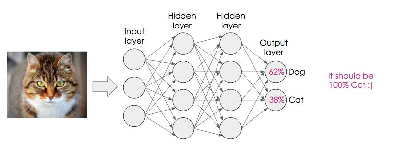
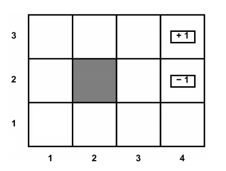
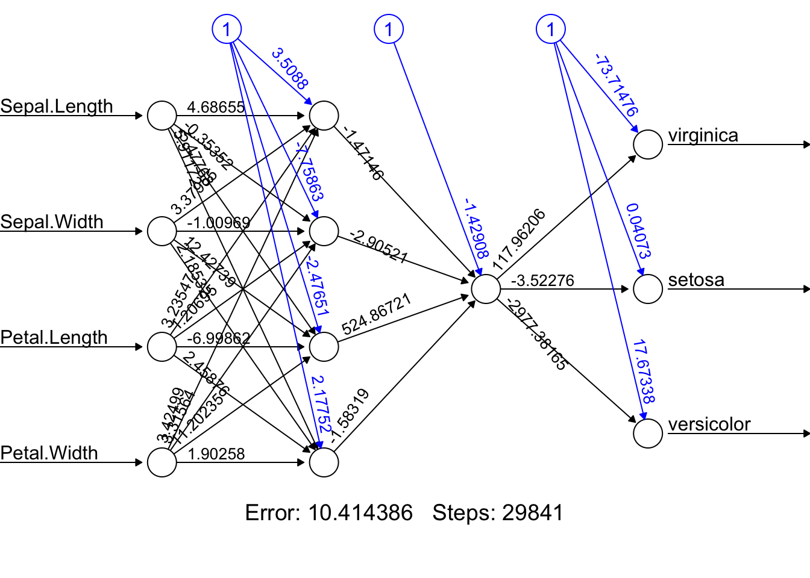

# install.packages("neuralnet")
library(neuralnet)Section 10 - Neural Networks, Deep Learning, and Reinforcement Learning
Notes
In this section we will briefly cover Neural Networks (NN), Deep Learning (DL), and Reinforcement Learning (RL). For a more in-depth treatment of these topics, please consult the syllabus for suggested readings. The material in these notes draws on past notes by TFs Laura Morris, Emily Mower, and Amy Wickett.
NNs and DL
NNs are a subset of machine learning which is inspired by the human brain. They mimic how biological neurons communicate with one another to come up with a decision. The main idea behind neural networks is to extract linear combinations of features as new features and model the response variable as a nonlinear function of these new features.
A NN consists of an input layer, a hidden layer, and an output layer. The first layer receives raw input, it is processed by multiple hidden layers, and the last layer produces the result.
Deep learning algorithms or deep NNs consist of multiple hidden layers and nodes. The word “deep” refers the depth of neural networks. They are generally used for solving complex problems such as Image classification, Speech recognition, and Text generation.
When developing a NN model, we need to decide upon design, training, and level of learning.
Design: What network structure to choose?
Multiple types of NNs are used for advanced machine-learning applications. In this section, we will cover the 2 popular types of NNs.
- Feedforward NNs:
Feedforward NNs consist of an input layer, hidden layers, and an output layer. It is called feedforward because the data flow in the forward direction. It is mostly used in Classification, Face recognition, and Pattern recognition. Convolutional NNs are examples of feedforward NNs.
- Recurrent NNs:
Recurrent NNs are commonly used for sequential data such as texts, sequences of images, and time series. They are similar to feed-forward networks, except they get inputs from previous sequences using a feedback loop. Recurrent NNs are used in natural language processing (NLP), sales predictions, and weather forecasting. Hopfield NNs are examples of Recurrent NNs.
Training: How to train the network (obtain the weights and other parameters)?
We use training data sets to train NNs. The rule of Thumb is that the number of training examples should be at least five to ten times the number of weights of the network. The most common training algorithm is called Backpropagation. The main steps of Backpropagation:
- Randomization: Start with small random weights
- Forward Pass: Calculate the output and measure the errors
- Backward Pass: Use errors to adjust weights (supervised learning)
- Loop: Repeat this process until a stopping criterion is met
Using the example below, can you briefly explain how backpropagation works?

Level of Learning: Deep Learning or Shallow Learning?
This step consists of deciding whether to use a NN with one hidden layer (shallow learning) or a NN with multiple hidden layers (deep learning).
RL
For a more thorough treatment of reinforcement learning, I recommend Reinforcement Learning: An Introduction by Richard Sutton and Andrew Barto, which is on the syllabus. In their book, they describe reinforcement learning as follows:
Reinforcement learning is learning what to do—how to map situations to actions—so as to maximize a numerical reward signal. The learner is not told which actions to take, but instead must discover which actions yield the most reward by trying them. In the most interesting and challenging cases, actions may affect not only the immediate reward but also the next situation and, through that, all subsequent rewards. These two characteristics—trial-and-error search and delayed reward—are the two most important distinguishing features of reinforcement learning.}
RL is a fascinating field, where agents learn policies (that is, rules regarding which action to take given the current state ) based on interacting with the environment and receiving rewards . Therefore, RL problems are often described by the tuple \(\{s, a, r\}\), which correspond to state, action, and reward. The idea is that the agent is in a current state \(s\) and can take any number of actions. For each action, the agent will transition to a new state \(s'\) and receive a reward \(r'\), which will both depend on which action the agent takes. Often, the reward will be zero for a very long time before a non-zero reward is achieved. Throughout the learning process, the agent faces a tradeoff between exploitation and exploration.
There are many forms of RL. Some are based on statistical models. These often involve updating the models using new observations and then sampling subsequent actions based on their estimated probability of being optimal.
In this class, we focused on examples of Markov Decision Processes (MDPs). MDPs assume the Markov property holds. The Markov Property says that if I know the agent’s current state, then learning about the agent’s previous actions and states gives me no relevant information. In other words, I can ignore the agent’s history, since everything important from the past is captured in the agent’s present state and our current estimates of the environment. This is not always a reasonable assumption, but it is reasonable in the gridworld example that is commonly used to introduce people to MDPs.
Below is an example of gridworld. In gridworld, we assume that the agent is free to move between all the white boxes and will receive a reward of zero whenever he/she is in a white box. The agent cannot leave the grid or enter the black box. Any effort to move out of the grid or into the black box will result in the agent staying put. If the agent makes it to one of the boxes with +1 or -1, then the agent will receive the corresponding reward and will remain put forever (but will only collect the reward once – not each period). Often, the agent discounts future rewards using a discount factor \(\gamma\), and sometimes the agent’s intended actions are perturbed by noise so that they only go in the intended direction with some probability \(p\).
Suppose we want to figure out what the agent’s optimal policy would be, that is, for each white box, which action should the agent take? One way to figure this out is value iteration. Value iteration calculates the value of each action for each cell and then selects the action with the highest value. It repeats this process, updating its estimates of the values of the actions as it gets more information. Assume the discounting factor (\(\gamma\)) is 0.8. In the gridworld example below, under the optimal policy, what is the value of being in each square?

Hint 1 : start from the square that is adjacent to the one with a reward of +1.
Hint 2: note that the value at each state is given by the equation:
\[ V^{*}(s) = \max_{a}[r(s, a) + \gamma V^{*}(\delta (s, a))] \]
As the example shows, value iteration is straightforward when you have information about your environment, such as the transition probabilities and rewards. There is an extension called Q-learning that can be used when you don’t have information about your environment, or at least don’t have full information about your environment, but you are still operating in a finite MDP. In Q-learning the agent follows a policy with some randomness to explore the space and updates its beliefs about optimal actions based on realized rewards. We will see an example of this problem in R.
Code
Neural Networks and Deep Learning
This section draws heavily from DataCamp’s tutorial on neural networks. The tutorial can be found here.
In this session, we will learn to create a simple neural network (NN) with the R packages neuralnet. The required packages are:
We will also use the tidyverse for data manipulation:
library(tidyverse)We will use the built-in R data set “iris” and use NNs to classify observations to different species. The “Species” variable is thus our outcome.
You can access data by typing iris and running it in the R console. We start by converting character column types into factors.
iris <- iris %>% mutate_if(is.character, as.factor)Use the summary function to assess data distribution.
summary(iris) Sepal.Length Sepal.Width Petal.Length Petal.Width
Min. :4.300 Min. :2.000 Min. :1.000 Min. :0.100
1st Qu.:5.100 1st Qu.:2.800 1st Qu.:1.600 1st Qu.:0.300
Median :5.800 Median :3.000 Median :4.350 Median :1.300
Mean :5.843 Mean :3.057 Mean :3.758 Mean :1.199
3rd Qu.:6.400 3rd Qu.:3.300 3rd Qu.:5.100 3rd Qu.:1.800
Max. :7.900 Max. :4.400 Max. :6.900 Max. :2.500
Species
setosa :50
versicolor:50
virginica :50
As we can see, we have balanced data. All three target classes have 50 samples.
Train and Test Split
We will split the data into train and test datasets for model training and evaluation. We will be splitting it into 80:20.
set.seed(222)
data_rows <- floor(0.80 * nrow(iris))
train_indices <- sample(c(1:nrow(iris)), data_rows)
train_data <- iris[train_indices,]
test_data <- iris[-train_indices,]The neuralnet package allows a simple implementation of NNs. For packages that allow for more sophisticated implementation, check out “keras” and “tensorflow”.
Here is an example NN with two hidden layers: the first layer with four neurons and the second with two neurons.
model = neuralnet(
Species ~ Sepal.Length + Sepal.Width + Petal.Length + Petal.Width,
data = train_data,
hidden = c(4, 1),
linear.output = FALSE)To view our model architecture, we will use the plot function. It requires a model object and rep argument.
plot(model, rep = "best")
To predict the outcome, we will use the predict function. We will use the test data to predict the outcome.
pred <- predict(model, test_data, response = "Species")Model evaluation can be done using confusion matrices. We will convert the predicted values into labels and calculate the error rate.
labels <- levels(train_data$Species)
prediction_label <- data.frame(max.col(pred)) %>%
mutate(pred = labels[max.col.pred.]) %>%
select(2) %>%
unlist()
errors = as.numeric(test_data$Species) != max.col(pred)
error_rate = (sum(errors)/nrow(test_data))*100
print(paste("Error Rate: ", round(error_rate,2), "%"))[1] "Error Rate: 3.33 %"table(test_data$Species, prediction_label) prediction_label
setosa versicolor virginica
setosa 9 0 0
versicolor 0 10 0
virginica 0 1 10The error rate is 3.33%, which is quite good. The confusion matrix shows that the model is performing well.
Reinforcement Learning
This part draws heavily from the “ReinforcementLearning” package vignette. The package can be found here.
#install.packages("ReinforcementLearning")
library(ReinforcementLearning)This section demonstrates the capabilities of the ReinforcementLearning package with the help of a practical example, a Gridworld. The goal is to teach optimal movements to a robot in a grid-shaped maze (adapted from Sutton (1998)). Here the agent must navigate from a random starting position to a final position on a simulated 2×2 grid (see figure below). The reward structures are as follows: each movement leads to a negative reward of -1 to penalize routes that are not the shortest path. If the agent reaches the goal position, it earns a reward of 10.
s1 | s4 |
s2 | s3 |
Define the state and action sets, and load the built-in environment function for the 2×2 gridworld.
states <- c("s1", "s2", "s3", "s4")
actions <- c("up", "down", "left", "right")Load built-in environment function for 2x2 gridworld
env <- gridworldEnvironment
print(env)function (state, action)
{
next_state <- state
if (state == state("s1") && action == "down")
next_state <- state("s2")
if (state == state("s2") && action == "up")
next_state <- state("s1")
if (state == state("s2") && action == "right")
next_state <- state("s3")
if (state == state("s3") && action == "left")
next_state <- state("s2")
if (state == state("s3") && action == "up")
next_state <- state("s4")
if (next_state == state("s4") && state != state("s4")) {
reward <- 10
}
else {
reward <- -1
}
out <- list(NextState = next_state, Reward = reward)
return(out)
}
<bytecode: 0x13558cbb0>
<environment: namespace:ReinforcementLearning>After having specified the environment function, we can use the built-in sampleExperience() function to sample observation sequences from the environment. The following code snippet generates a data frame data containing 1000 random state-transition tuples.
?sampleExperience
data <- sampleExperience(N = 1000,
env = env,
states = states,
actions = actions)
head(data) State Action Reward NextState
1 s1 right -1 s1
2 s4 right -1 s4
3 s3 up 10 s4
4 s1 up -1 s1
5 s4 right -1 s4
6 s2 left -1 s2We can now use the observation sequence in data in order to learn the optimal behavior of the agent. For this purpose, we first customize the learning behavior of the agent by defining a control object. We follow the default parameter choices and set the learning rate alpha to 0.1, the discount factor gamma to 0.5, and the exploration greediness epsilon to 0.1. Subsequently, we use the ReinforcementLearning() function to learn the best possible policy for the input data.
# Define reinforcement learning parameters
control <- list(alpha = 0.1, gamma = 0.5, epsilon = 0.1)
# Perform reinforcement learning
?ReinforcementLearning
model <- ReinforcementLearning(data,
s = "State",
a = "Action",
r = "Reward",
s_new = "NextState",
control = control)Evaluating policy learning
# Print policy
computePolicy(model) s1 s2 s3 s4
"down" "right" "up" "left" Print state-action function
print(model)State-Action function Q
right up down left
s1 -0.6769943 -0.727481 0.7211750 -0.6641956
s2 3.5459967 -0.711599 0.7227171 0.7305628
s3 3.5167406 9.112867 3.5403134 0.7324369
s4 -1.9264142 -1.906775 -1.9032334 -1.8981189
Policy
s1 s2 s3 s4
"down" "right" "up" "left"
Reward (last iteration)
[1] -494Print summary statistics
summary(model)
Model details
Learning rule: experienceReplay
Learning iterations: 1
Number of states: 4
Number of actions: 4
Total Reward: -494
Reward details (per iteration)
Min: -494
Max: -494
Average: -494
Median: -494
Standard deviation: NA